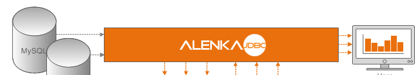

Welcome to Alenka JDBC
Alenka JDBC developed by Technica Corporation is a library for accessing and manipulating data with the open-source GPU database engine Alenka. Development is currently in progress and updates will be posted here as we near the release of the first beta. Watch/star the project and stay in the loop!
What is Alenka?
Alenka is an open-source database engine that utilizes the GPU to process data by taking advantage of massive vector based parallel processing. Alenka provides a high performance, scalable engine that can process very large quantities of data on a single machine. Alenka uses compression algorithms and column-based storage in order to save disk space and reduce input/output time as data is transferred from internal hard drives to the GPU for processing. Alenka solves the complexity of handling big data by removing the need for multiple node systems and clusters for Hadoop. Alenka can be run using commodity hardware and a modern GPU. Alenka Home: Github.com/antonmks/Alenka
Support or Contact
For more information regarding the project email Devin Pinkston or contact github@technicacorp.com and we’ll help you sort it out.